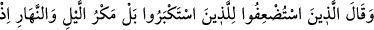

32. Büyüklük taslayanlar, zayıf sayılanlara (kıyâmet gününde): “Size hidayet
geldikten sonra sizi ondan biz mi çevirdik? Bilakis siz suç işliyordunuz.” derler.
Sanki “Büyüklük taslayanlar ne dedi?” diye sorulmuş ve cevap olarak şöyle
denilmiştir:
“Büyüklük taslayanlar, zayıf sayılanlara (kıyâmet gününde)” kendilerinin onları
îmandan men’ettiklerini inkâr edip bu durumu onlara, yâni zayıf sayılanlara ispat
ederek: “Size hidâyet geldikten sonra sizi ondan” îman ve hidâyeti kabulden “biz mi
çevirdik?” Sizi biz mi menettik, biz mi uzaklaştırdık? Yâni sizi ondan biz çevirmedik.
“Bilakis siz suç işliyordunuz,” günah işlemekte karar kılmıştınız. İşte bu sebeple
kendinizi îmandan men’ettiniz ve taklîdi tercih ettiniz “derler.”
Burada kâfirlerin dünyada birbirlerine itâat etmelerinin âhirette düşmanlığa ve
birbirlerinden uzaklaşmaya sebep olacağına dikkat çekilmektedir.
33. Zayıf sayılanlar da büyüklük taslayanlara: “Hayır! Gece gündüz (işiniz)
tuzak kurmaktı. Çünkü siz daima Allah’ı inkâr etmemizi, O’na ortaklar koşmamızı
bize emrederdiniz.” derler. Artık azabı gördüklerinde, için için yanarlar; biz de o
inkâr edenlerin boyunlarına demir halkalar takarız. Onlar ancak yapmakta
oldukları günahları yüzünden cezalandırılırlar.
“Zayıf sayılanlar da büyüklük taslayanlara” cevap olarak “Hayır! Gece gündüz
(işiniz)” bize “tuzak kurmaktı” yâni bilakis sizin bize gece ve gündüz kurduğunuz hile
ve tuzağınız, şirk ve günahlara zorlamanız hidâyetten çevirdi. “Çünkü siz” bize tuzak
kurup hile ve tuzak kurarak “daima Allah’ı inkâr etmemizi, O’na ortaklar koşmamızı”
O’nun ortakları olduğunu söylememizi “bize emrederdiniz.” derler.”
“__WORD__, başkasını bir hile ile maksadından çevirmektir.
Burada onların tuzaklarından/hilelerinden murad, ya onların zikredilen emirlerinin
kendisidir. Nitekim “Ey kavmim! Allah’ın size lütfettiği nimetini hatırlayın, zira O
size içinizden peygamberler çıkardı ve sizi hükümdarlar kıldı.” (el-Mâide, 5/20)
âyetinde de durum aynıdır. Çünkü içlerinden peygamberler çıkarması ve onları
hükümdarlar kılması aslında Allah’ın pek büyük nimetleridir. Bu iki şey tuzak kurucu